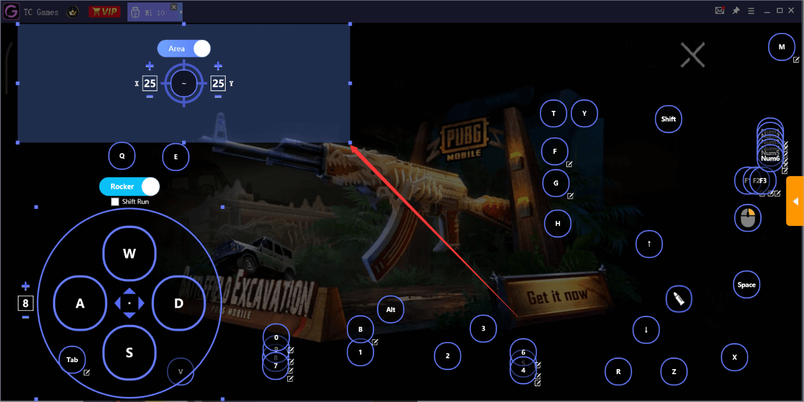
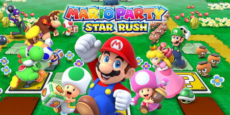
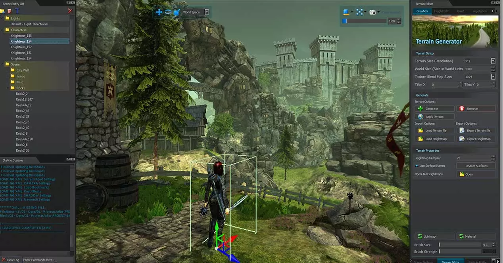
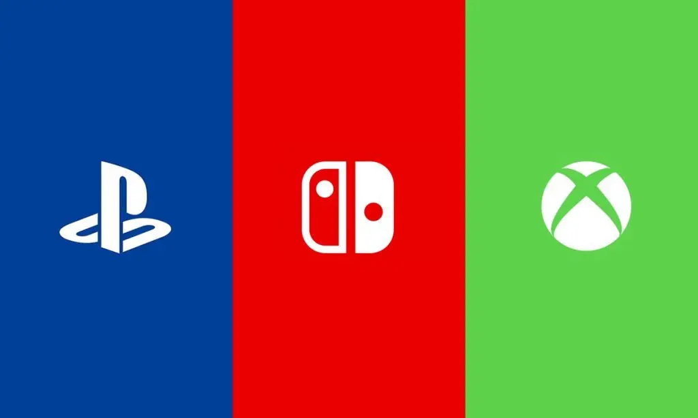

- Macro
- Metodo que permite agrupar un conjunto de acciones de un juego y
ejecutarlas de manera consecutiva con una unica pulsacion de un boton.
|

|
- Manquear
- Dicho de un jugador que, de formar despectiva, es un mal jugador, generalmente porque es novato o
poco experimentado en el juego.
|
|
- Minijuego
- Pequeño juego muy sencillo y con sus propias normas que forma parte de un videojuego, a veces como mero
entretenimiento extra opcional y otras como parte del propio juego, necesario para realizar ciertas acciones especiales.
|

|
- Motor Gráfico
- Es la parte fundamental del motor de juego, y funcion principal es renderizar y animar los mdelos 2D y 3D
diseñados previamente por los artistas del juego.
|

|
- Multiplataforma
- Videojuego publicado en varias plataformas de juego distintas.
|

|